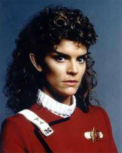
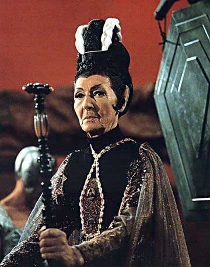

|
Meus
Vulcanos Favoritos
 Vou
aproveitar o momento de relanamento em DVD dos filmes de Jornada
nas Estrelas no Brasil para repassar algumas coisas referentes
aos seus personagens. Mas, desta vez a preferncia ser para os
coadjuvantes e convidados, em especial, os aliengenas. Falarei
aqui dos Vulcanos marcantes nas aventuras da Frota Estelar, com exceo
de Spock, claro. Saavik, Sarek e T'Pau so os meus preferidos. Vou
aproveitar o momento de relanamento em DVD dos filmes de Jornada
nas Estrelas no Brasil para repassar algumas coisas referentes
aos seus personagens. Mas, desta vez a preferncia ser para os
coadjuvantes e convidados, em especial, os aliengenas. Falarei
aqui dos Vulcanos marcantes nas aventuras da Frota Estelar, com exceo
de Spock, claro. Saavik, Sarek e T'Pau so os meus preferidos.
Comeo
logo perguntando: onde est Saavik? A personagem foi interpretada
pela primeira vez em "Jornada nas Estrelas II: A Ira de
Khan" pela ento desconhecida atriz Kirstie Alley. Na poca,
a talentosa mocinha j queria ganhar um cach igual ao do DeForest
Kelley, no que foi dissuadida pelos produtores, pois ela estava
apenas comeando a sua carreira, e o velho e bom doutor McCoy j
fazia parte da vida de muita gente havia dcadas.
Mesmo j tendo trabalhado na famosa srie "Cheers",
todos sabem que a mocinha despontou depois para o estrelato com os
filmes da srie "Olha Quem Est Falando". Sua fama
continuou grande a ponto de ganhar uma srie exclusiva na televiso,
com "Veronica's Closet". A Saavik interpretada por Alley
seguidora dos regulamentos, disciplina aplicada de um Spock
orgulhoso pelo seu desempenho. Mas ela ainda v tudo com certo
preconceito em relao aos humanos, estranhando o seu
comportamento, atravs do exemplo de sentimentalismo oferecido por
Kirk na morte de Spock. Ao mesmo tempo que ela o admira, percebe
nele uma postura inadequada ou ilgica no teste do Kobayashi Maru.
 A
Saavik que foi interpretada por Robin Curtis era um pouquinho
diferente. A atriz substituiu Alley porque ela se recusou a
continuar no papel, que julgava no ser muito importante em relao
s outras oportunidades profissionais. O que ela queria para
reprisar a apario, os produtores no podiam pagar.
Curtis passou a figurar em "Jornada nas Estrelas III:
Procura de Spock", apresentando uma Saavik mais entrosada e
acostumada com Kirk e os humanos. Ela foi tambm parceira de David
Kirk na proteo do Projeto Gnese e teve uma participao
muito importante no desenvolvimento biolgico e psicolgico de
Spock, ressuscitado no planeta recm-criado. Foi Saavik quem se
tornou a sua parceira na passagem pelo Pon Farr, o ritual de
acasalamento Vulcano. Isso deixou um gancho para um possvel
relacionamento entre os dois, tanto que especula-se que em "Jornada
nas Estrelas IV: A Volta para Casa" ela teria ficado em
Vulcano grvida, esperando um filho de Spock.
Outra proposta descartada nas cenas exibidas foi a aluso sua
herana tnica. Neste caso, havia a suposio de que ela fosse
metade Vulcana, metade Romulana. No sabemos, a partir da, o que
foi feito de Saavik. Em algum lugar por a (publicaes), dizem
que Spock se casou e Picard mencionou, em "Sarek", que foi
ao casamento do filho do embaixador (teria sido Spock?).
A minha suposio a de que ele teria se casado com Saavik e
isso o ajudou a tomar sua deciso de promover a reunificao com
o povo Romulano. Curtis participou novamente de Jornada
interpretando a Vulcana Tallera, em "Gambit", um
episdio duplo da stima temporada de A Nova Gerao.
Houve
uma tentativa de reapresentar Saavik no filme "Jornada nas
Estrelas VI: A Terra Desconhecida", mas pegaria mal que ela
figurasse como traidora da Frota Estelar. Ento decidiram criar
outra personagem com quase as mesmas caractersticas que Saavik: a
tenente Valeris, interpretada por Kim Cattrall. Esta atriz famosa
por fazer papis sensuais em alguns filmes e sries, como
"Sex and the City". H histria de que Cattrall pousou
para fotos picantes no "set" da ponte da Enterprise
durante as filmagens de Jornada VI. Isso foi negado
veementemente por Leonard Nimoy, produtor-executivo do filme, mas
parece que rolou. Nimoy teria ficado to furioso que teria proibido
qualquer divulgao das imagens, obrigando o fotgrafo a destru-las.
Outros Vulcanos no tiveram to longa apresentao no cinema.
Alguns participaram esporadicamente como os mestres do monte Seleya
para a juno da alma com o corpo de Spock em Jornada III.
A sacerdotisa T'Lar (Dame Judith Anderson) presidiu o Fal-tor-pan,
responsvel pela reunio do corpo com o "katra" de
Spock. Antes, houve tambm aqueles que estiveram na cerimnia do
Kolinahr, em "Jornada nas Estrelas: O Filme", onde
Spock buscou, sem sucesso, a lgica pura.
Porm, na verdade quem faltou mesmo a tudo isso foi a grande T'Pau,
interpretada por Clia Lovsky. Todos gostariam que a personagem
pudesse aparecer no cinema, mas a atriz j havia falecido. Por esta
razo T'Pau foi trocada por T'Lar em Jornada III.

A nossa querida T'Pau foi to marcante que cogitaram dela ser a
subcomandante do prottipo da Enterprise, comandada por Jonathan
Archer. Quando a produo viu o custo disso no pagamento de
direitos autorais e de representao aos responsveis, a
Paramount resolveu mudar o nome da personagem para T'Pol (Jolene
Blalock). Em A Nova Gerao no temos Vulcanos marcantes
no cinema, exceto, claro, pelo clebre "primeiro
Vulcano", que contatou Zefram Cochrane em "Jornada nas
Estrelas: Primeiro Contato".
A esta altura, o leitor pode estar desconfiado de que esqueci de
algum. No nada disso! Sarek e seu intrprete, Mark Lenard, so
to admirveis que merecem um comentrio exclusivo. Fica para o ms
que vem!
Cludio
Silveira escreve regularmente sobre os filmes com
exclusividade para o Trek Brasilis
|